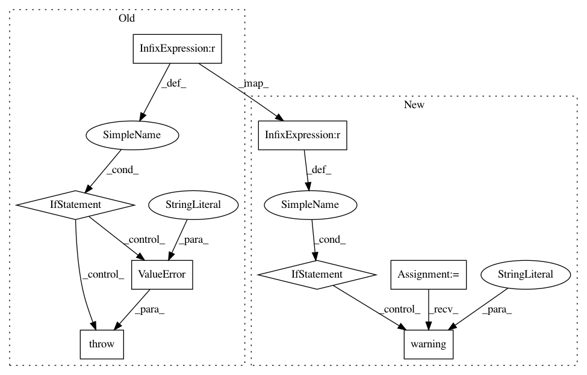

d5801e31dafe0320109862e9cd216213e62e92b5,art/estimators/object_detection/tensorflow_faster_rcnn.py,TensorFlowFasterRCNN,__init__,#TensorFlowFasterRCNN#Any#Any#Any#Any#Any#Any#Any#Any#Any#Any#Any#Any#Any#,54
Before Change
self._attack_losses: Tuple[str, ...] = attack_losses
// Assign session
if sess is None:
raise ValueError("A session cannot be None.")
self._sess: Optional["Session"] = sess
@staticmethod
def _load_model(
After Change
self._attack_losses: Tuple[str, ...] = attack_losses
// Assign session
if sess is None:
logging.warning("A session cannot be None, create a new session.")
self._sess: "Session" = tf.Session()
else:
self._sess: "Session" = sess
// Initialize variables
self._sess.run(tf.global_variables_initializer())
self._sess.run(tf.local_variables_initializer())
@staticmethod
In pattern: SUPERPATTERN
Frequency: 3
Non-data size: 8
Instances
Project Name: IBM/adversarial-robustness-toolbox
Commit Name: d5801e31dafe0320109862e9cd216213e62e92b5
Time: 2020-06-25
Author: M.N.Tran@ibm.com
File Name: art/estimators/object_detection/tensorflow_faster_rcnn.py
Class Name: TensorFlowFasterRCNN
Method Name: __init__
Project Name: pfnet/optuna
Commit Name: 1065e85b335904177060014b1b6775ecd975a643
Time: 2020-03-13
Author: sano@preferred.jp
File Name: optuna/samplers/grid.py
Class Name: GridSampler
Method Name: sample_relative
Project Name: IBM/adversarial-robustness-toolbox
Commit Name: 9a3a5f4ecfc2bdb2e6b34feec20869528d5d7661
Time: 2020-09-28
Author: M.N.Tran@ibm.com
File Name: art/estimators/classification/pytorch.py
Class Name: PyTorchClassifier
Method Name: __init__